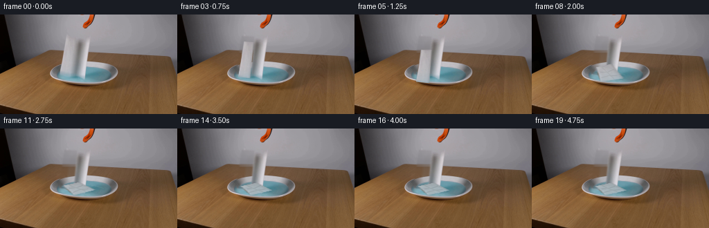
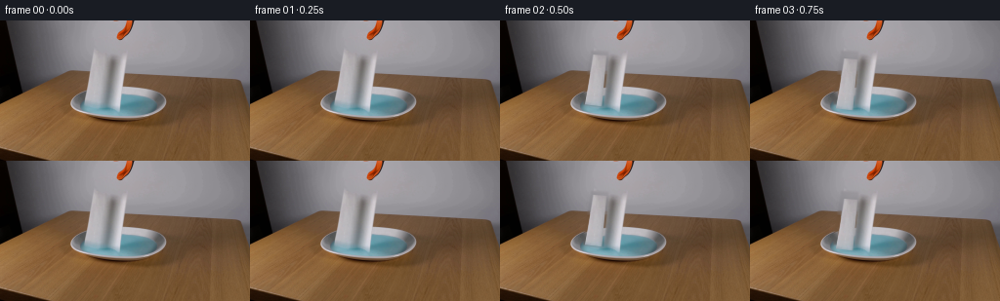

CODING AGENTS AS PIXEL WORLD MODELS
traex/GPT-5.6-Sol · 0129
点击播放 · 原生 RGB 像素
逐轮保存的候选
回放视频、检查图与代码变化。
每份候选均可单独播放。实际图片检查记录在下方工具轨迹中。
候选 01播放与检查图
点击播放 · 原生 RGB 像素


展开代码变化
--- 上一保存版本
+++ 本次保存版本
@@ -0,0 +1,220 @@
+from pathlib import Path
+
+import cv2
+import numpy as np
+from PIL import Image
+
+import artifact_io
+
+
+HERE = Path(__file__).resolve().parent
+
+
+def smoothstep(x):
+ x = np.clip(x, 0.0, 1.0)
+ return x * x * (3.0 - 2.0 * x)
+
+
+def antialiased_polygon(points, shape, scale=4):
+ """Return a soft, sub-pixel polygon mask."""
+ h, w = shape
+ canvas = np.zeros((h * scale, w * scale), np.uint8)
+ pts = np.round(np.asarray(points, np.float32) * scale).astype(np.int32)
+ cv2.fillPoly(canvas, [pts], 255, lineType=cv2.LINE_AA)
+ return cv2.resize(canvas, (w, h), interpolation=cv2.INTER_AREA).astype(np.float32) / 255.0
+
+
+def remove_original_towel(image, object_alpha):
+ """Reconstruct the locked scene under the initially hanging towel.
+
+ Above the dish the clean fill follows the scene's smooth horizontal
+ illumination. In the dish it uses the unobstructed, symmetric side of
+ the bowl, retaining the liquid and rim texture instead of a flat patch.
+ """
+ h, w = image.shape[:2]
+ expanded = cv2.dilate((object_alpha * 255).astype(np.uint8),
+ np.ones((5, 5), np.uint8), iterations=1)
+ expanded = cv2.GaussianBlur(expanded, (5, 5), 0.9).astype(np.float32) / 255.0
+
+ fill = image.astype(np.float32).copy()
+ xs = np.arange(w, dtype=np.float32)
+ original = image.astype(np.float32)
+ for y in range(30, 91):
+ if y < 68:
+ # Both ranges are clear background/table on either side of the
+ # paper and grabber. A linear fit preserves the broad lighting.
+ sample_x = np.r_[np.arange(67, 86), np.arange(141, 178)]
+ A = np.c_[sample_x.astype(np.float32), np.ones(len(sample_x), np.float32)]
+ mirrored_x = np.clip(248 - xs.astype(np.int32), 0, w - 1)
+ for c in range(3):
+ coef, _, _, _ = np.linalg.lstsq(A, original[y, sample_x, c], rcond=None)
+ trend = coef[0] * xs + coef[1]
+ source_trend = coef[0] * mirrored_x + coef[1]
+ # A little mirrored residual keeps the fine surface texture.
+ residual = original[y, mirrored_x, c] - source_trend
+ fill[y, :, c] = trend + 0.28 * residual
+ else:
+ mirrored_x = np.clip(248 - np.arange(w), 0, w - 1)
+ fill[y] = original[y, mirrored_x]
+
+ # Telea is only a fallback at the soft perimeter; the analytic fill is
+ # what appears in the fully covered center.
+ telea = cv2.inpaint(image, (expanded > 0.12).astype(np.uint8) * 255, 4,
+ cv2.INPAINT_TELEA).astype(np.float32)
+ fill = 0.82 * fill + 0.18 * telea
+ out = original * (1.0 - expanded[..., None]) + fill * expanded[..., None]
+ return np.clip(out, 0, 255).astype(np.uint8)
+
+
+def bilinear_point(quad, u, v):
+ q = np.asarray(quad, np.float32)
+ return ((1-u)*(1-v)*q[0] + u*(1-v)*q[1] + u*v*q[2] + (1-u)*v*q[3])
+
+
+def add_water_ripples(frame, base, frame_index):
+ if frame_index < 5 or frame_index > 15:
+ return frame
+
+ h, w = frame.shape[:2]
+ yy, xx = np.mgrid[:h, :w]
+ # Only alter pixels that are visibly liquid, so the grabber, rim and
+ # tabletop retain their correct occlusion.
+ b = base.astype(np.int16)
+ liquid = ((b[..., 2] > b[..., 0] + 10) &
+ (b[..., 2] > b[..., 1] + 3) &
+ ((((xx - 124.0) / 44.0) ** 2 + ((yy - 87.0) / 13.0) ** 2) < 1.0))
+
+ age = frame_index - 5
+ strength = float(smoothstep(min(age / 2.0, 1.0)) *
+ (1.0 - smoothstep(max((age - 5.0) / 5.0, 0.0))))
+ if strength <= 0:
+ return frame
+
+ layer = np.zeros_like(frame)
+ alpha = np.zeros((h, w), np.float32)
+ center = (110, 88)
+ outer_x = 10 + age * 5
+ outer_y = max(2, int(round(outer_x * 0.18)))
+ for k, (col, multiplier) in enumerate([((190, 211, 216), 0.12),
+ ((73, 125, 141), 0.075)]):
+ ax = max(3, outer_x - k * 8)
+ ay = max(1, outer_y - k)
+ line = np.zeros((h, w), np.uint8)
+ cv2.ellipse(line, center, (ax, ay), 0, 195, 348, 255, 1, cv2.LINE_AA)
+ m = (line.astype(np.float32) / 255.0) * liquid * strength * multiplier
+ layer[m > 0] = col
+ alpha = np.maximum(alpha, m)
+ out = frame.astype(np.float32) * (1 - alpha[..., None]) + layer.astype(np.float32) * alpha[..., None]
+ return np.clip(out, 0, 255).astype(np.uint8)
+
+
+def render_towel(base, source_rgb, source_alpha, src_quad, dst_quad, frame_index):
+ h, w = base.shape[:2]
+ H = cv2.getPerspectiveTransform(np.asarray(src_quad, np.float32),
+ np.asarray(dst_quad, np.float32))
+ rgb = cv2.warpPerspective(source_rgb, H, (w, h), flags=cv2.INTER_CUBIC,
+ borderMode=cv2.BORDER_REFLECT_101).astype(np.float32)
+ alpha = cv2.warpPerspective(source_alpha, H, (w, h), flags=cv2.INTER_LINEAR,
+ borderMode=cv2.BORDER_CONSTANT).astype(np.float32)
+ alpha = np.clip(alpha, 0.0, 1.0)
+
+ # A weak contact shadow gives the falling strip depth without moving any
+ # actual lighting in the locked shot. It tightens as the towel lands.
+ contact = smoothstep((frame_index - 3) / 6.0)
+ dx = int(round(4 - 2 * contact))
+ dy = int(round(3 - 2 * contact))
+ shadow = np.zeros_like(alpha)
+ if dx < w and dy < h:
+ shadow[dy:, dx:] = alpha[:h-dy, :w-dx]
+ shadow = cv2.GaussianBlur(shadow, (7, 7), 1.6)
+ shadow_opacity = 0.045 + 0.035 * contact
+ out = base.astype(np.float32) * (1.0 - shadow[..., None] * shadow_opacity)
+
+ # The contacted portion becomes slightly darker and takes on the pale
+ # blue of the liquid. Capillary wetting continues after motion stops.
+ yy = np.arange(h, dtype=np.float32)[:, None]
+ impact_age = smoothstep((frame_index - 4) / 12.0)
+ lower_contact = smoothstep((yy - 75.0) / 18.0)
+ wet = np.clip((0.10 * lower_contact + 0.24 * impact_age) * alpha, 0, 0.34)
+ water_tint = np.array([119.0, 169.0, 181.0], np.float32)
+ rgb = rgb * (1.0 - wet[..., None]) + water_tint * wet[..., None]
+
+ # As it buckles, add restrained compressed-fiber creases, clipped to the
+ # actual warped silhouette.
+ if frame_index >= 6:
+ crease = np.zeros((h, w), np.uint8)
+ q = np.asarray(dst_quad, np.float32)
+ paths = [
+ [bilinear_point(q, .10, .34), bilinear_point(q, .47, .43), bilinear_point(q, .88, .35)],
+ [bilinear_point(q, .31, .08), bilinear_point(q, .45, .50), bilinear_point(q, .58, .91)],
+ [bilinear_point(q, .05, .72), bilinear_point(q, .45, .67), bilinear_point(q, .82, .76)],
+ ]
+ for j, path in enumerate(paths):
+ pts = np.round(path).astype(np.int32).reshape(-1, 1, 2)
+ cv2.polylines(crease, [pts], False, 255 if j != 1 else 210, 1, cv2.LINE_AA)
+ cm = (crease.astype(np.float32) / 255.0) * alpha * min(1.0, (frame_index - 5) / 4.0)
+ rgb *= (1.0 - 0.085 * cm[..., None])
+ # A neighboring glint makes each crease read as folded paper, not ink.
+ glint = np.roll(cm, 1, axis=0)
+ rgb = rgb * (1.0 - 0.035 * glint[..., None]) + 225.0 * (0.035 * glint[..., None])
+
+ out = out * (1.0 - alpha[..., None]) + rgb * alpha[..., None]
+ return np.clip(out, 0, 255).astype(np.uint8)
+
+
+def make_frames(first):
+ h, w = first.shape[:2]
+ # The hanging towel is a narrow, softly edged strip. Coordinates follow
+ # its actual boundaries in the supplied first frame.
+ src_quad = np.array([[95, 33], [109, 34], [104, 86], [87, 84]], np.float32)
+ source_alpha = antialiased_polygon(src_quad, (h, w))
+ clean_scene = remove_original_towel(first, source_alpha)
+
+ quads = [
+ src_quad.copy(),
+ src_quad.copy(),
+ np.array([[95, 35], [109, 36], [104, 88], [87, 86]], np.float32),
+ np.array([[96, 39], [110, 40], [105, 92], [88, 90]], np.float32),
+ np.array([[96, 45], [110, 46], [105, 98], [88, 96]], np.float32),
+ np.array([[96, 51], [111, 51], [108, 99], [89, 97]], np.float32),
+ np.array([[96, 58], [112, 57], [115, 98], [90, 97]], np.float32),
+ np.array([[95, 67], [114, 64], [124, 96], [94, 97]], np.float32),
+ np.array([[93, 76], [115, 71], [133, 92], [100, 97]], np.float32),
+ np.array([[91, 82], [114, 77], [138, 88], [108, 96]], np.float32),
+ ]
+
+ frames = [first.copy()]
+ # Frame 1 is a brief real-time held beat. The towel then separates from
+ # the fixed open grabber and accelerates downward before folding on water.
+ frames.append(first.copy())
+ for i in range(2, 20):
+ if i < len(quads):
+ q = quads[i]
+ else:
+ # Tiny damp-paper relaxation over the final seconds.
+ settle = smoothstep((i - 9) / 6.0)
+ q0 = quads[-1]
+ q1 = np.array([[92, 83], [115, 78], [137, 89], [107, 96]], np.float32)
+ q = q0 * (1.0 - settle) + q1 * settle
+
+ scene = clean_scene.copy()
+ scene = add_water_ripples(scene, clean_scene, i)
+ frame = render_towel(scene, first, source_alpha, src_quad, q, i)
+ frames.append(frame)
+
+ result = np.stack(frames).astype(np.uint8)
+ # Contract guarantee: no processing whatsoever touches frame zero.
+ result[0] = first
+ return result
+
+
+def main():
+ first = np.asarray(Image.open(HERE / "first_frame.png").convert("RGB"), dtype=np.uint8)
+ if first.shape != (144, 256, 3):
+ raise ValueError(f"unexpected first-frame shape: {first.shape}")
+ frames = make_frames(first)
+ artifact_io.save(frames, HERE)
+
+
+if __name__ == "__main__":
+ main()
可观测工具轨迹
实际执行的命令与返回图片。
命令 1exit 0
/bin/bash -lc "cat prompt.txt && printf '\\n--- GENERATION_RULES ---\\n' && cat GENERATION_RULES.md"
命令 2exit 0
/bin/bash -lc "find . -maxdepth 2 -type f -printf '%p\\n' | sort && printf '\\n--- tools ---\\n' && command -v ffmpeg || true && command -v python3 || true"
命令 3exit 0
/bin/bash -lc "python3 - <<'PY'
from PIL import Image
im=Image.open('first_frame.png')
print(im.mode, im.size)
print('extrema', im.getextrema())
PY"命令 4exit 0
/bin/bash -lc "cat artifact_io.py && python3 - <<'PY'
import cv2, numpy as np
from PIL import Image
im=np.array(Image.open('first_frame.png'))
print('mean', im.mean((0,1)), 'std', im.std((0,1)))
# HSV masks, connected boxes
h=cv2.cvtColor(im,cv2.COLOR_RGB2HSV)
def comps(name,mask,n=20):
z=(mask.astype(np.uint8)*255)
k,lab,stats,cents=cv2.connectedComponentsWithStats(z)
out=[]
for i in range(1,k):
x,y,w,hh,a=stats[i];
if a>=3: out.append((a,(x,y,w,hh),tuple(np.round(cents[i],1))))
print('\\n',name,sorted(out,reverse=True)[:n])
# orange hue RGB red high g moderate blue low
comps('orange',(h[:,:,0]>=5)&(h[:,:,0]<=25)&(h[:,:,1]>100)&(h[:,:,2]>80))
comps('black',(im.max(2)<75))
comps('blue',(h[:,:,0]>=85)&(h[:,:,0]<=120)&(h[:,:,1]>35)&(h[:,:,2]>80))
comps('white',(im.min(2)>175)&((im.max(2)-im.min(2))<35))
# edge bounding by horizontal distribution
edge=cv2.Canny(im,60,140)
print('edge per row')
for y in range(0,144,4): print(y,int(edge[y:y+4].sum()/255),end='; ')
print('\\nedge per col')
for x in range(0,256,8): print(x,int(edge[:,x:x+8].sum()/255),end='; ')
# most common quantized colors
q=(im//16)*16
u,c=np.unique(q.reshape(-1,3),axis=0,return_counts=True)
for ii in np.argsort(c)[-30:][::-1]: print(tuple(u[ii]),c[ii])
PY"命令 5exit 0
/bin/bash -lc "python3 - <<'PY'
from PIL import Image
import numpy as np, cv2
im=np.array(Image.open('first_frame.png'))
hsv=cv2.cvtColor(im,cv2.COLOR_RGB2HSV)
# every 2x2 averaged, classify
for s in [4,2]:
print('\\nSCALE',s)
for y in range(0,112,s):
line=''
for x in range(0,192,s):
p=im[y:y+s,x:x+s].mean((0,1)); r,g,b=p; mx=max(p); mn=min(p)
if mx<38: c='#'
elif mx<70: c='K'
elif mx<95 and mx-mn<20: c='d'
elif mn>185 and mx-mn<30: c='W'
elif mn>155 and mx-mn<25: c='w'
elif b>r+12 and b>g+4: c='B'
elif mx-mn<18 and mx>120: c='g'
elif r>g*1.45 and r>b*1.6: c='O'
elif r>g*1.2 and r>b*1.4: c='o'
elif mx-mn<25: c='.'
else: c='-'
line+=c
print(f'{y:03}',line)
PY"命令 6exit 0
/bin/bash -lc "python3 - <<'PY'
import cv2, numpy as np
from PIL import Image
im=np.array(Image.open('first_frame.png'))
# kmeans crop x60:180 y20:112 to 15 clusters globally crop
for (name,x0,y0,x1,y1,s) in [('center',55,20,185,112,2),('top',105,0,150,45,1),('dish',60,60,190,112,2)]:
a=im[y0:y1,x0:x1]
Z=a.reshape(-1,3).astype(np.float32)
cv2.setRNGSeed(1)
_,lab,cen=cv2.kmeans(Z,14,None,(cv2.TERM_CRITERIA_EPS+cv2.TERM_CRITERIA_MAX_ITER,50,.2),5,cv2.KMEANS_PP_CENTERS)
# order luminance
lum=cen@np.array([.21,.72,.07]); order=np.argsort(lum); chars='#KkdoOrRBbgwW@X'
mp={int(v):chars[i] for i,v in enumerate(order)}
print('\\n',name)
for i in order: print(mp[int(i)], tuple(cen[i].round().astype(int)), 'n',int((lab==i).sum()))
L=lab.reshape(a.shape[:2])
for y in range(0,a.shape[0],s):
line=''
for x in range(0,a.shape[1],s):
vals=L[y:y+s,x:x+s].ravel(); q=np.bincount(vals,minlength=14).argmax();line+=mp[q]
print(f'{y0+y:03d}',line)
PY"命令 7exit 0
/bin/bash -lc "python3 - <<'PY'
import cv2,numpy as np
from PIL import Image
im=np.array(Image.open('first_frame.png'))
g=cv2.cvtColor(im,cv2.COLOR_RGB2GRAY)
for th in [(20,50),(50,100)]:
e=cv2.Canny(g,*th)
print('\\nEDGE',th)
for y in range(20,112,2):
s=''
for x in range(60,186,2):
q=e[y:y+2,x:x+2].sum()/255
s+= ' ' if q==0 else '.' if q==1 else ':' if q==2 else '#'
print(f'{y:03}',s)
# rgb + local contrast descriptors 1 pixel, center
print('\\nbrightness grid')
chars=' .:-=+*#%@'
for y in range(25,108,2):
s=''
for x in range(65,180,2):
v=g[y:y+2,x:x+2].mean(); s+=chars[min(9,int(v)//26)]
print(f'{y:03}',s)
PY"命令 8exit 0
/bin/bash -lc "python3 - <<'PY'
from PIL import Image
import numpy as np
im=np.array(Image.open('first_frame.png'))
xs=[80,88,92,96,100,104,108,112,116,120,124,128,132,136,140,144,148,152,156,160]
print('x',*xs)
for y in range(0,110,2):
print(y,end=' ')
for x in xs:
r,g,b=im[y,x]
# report hue category and lightness digit
if max(r,g,b)<45:c='X'
elif max(r,g,b)-min(r,g,b)<18:c='N'
elif r>g*1.35 and r>b*1.5:c='O'
elif b>r+12:c='B'
elif min(r,g,b)>170:c='W'
else:c='m'
print(c+str(int(max(r,g,b))//26),end=' ')
print()
# Exact pixels across central runs at several y
for y in [0,10,18,20,30,34,36,40,45,50,54,56,60,65,68,70,74,76,80,84,88,90,94,96,98,100,102]:
print('\\ny=',y)
last=None;st=None
for x in range(60,190):
p=tuple((im[y,x]//16)*16)
if p"'!=last:
if last is not None: print(f'"'{st}-{x-1}:{last}',end=' | ')
last=p;st=x
print(f'{st}-189:{last}')
PY"命令 9exit 0
/bin/bash -lc "python3 - <<'PY'
from PIL import Image
import cv2,numpy as np
im=np.array(Image.open('first_frame.png')); g=cv2.cvtColor(im,cv2.COLOR_RGB2GRAY)
for y in range(25,99):
# runs g>158 x70:115
q=g[y,70:116]>158
runs=[]; on=False
for i,v in enumerate(q):
if v and not on: st=i+70;on=True
if on and (not v or i==45):
en=(i+69 if not v else i+70); runs.append((st,en));on=False
if runs: print(y,runs, 'vals',[(a,b,int(g[y,a:b+1].mean())) for a,b in runs])
PY"命令 10exit 0
/bin/bash -lc "python3 generate.py && python3 - <<'PY'
import numpy as np
from PIL import Image
f=np.load('pixels.npz')['pixels']
a=np.array(Image.open('first_frame.png'))
r=((f[:,:,0]>>16)&255).astype(np.uint8);g=((f[:,:,0]>>8)&255).astype(np.uint8);b=(f[:,:,0]&255).astype(np.uint8)
out=np.dstack([r,g,b])
print('tensor', f.shape, f.dtype)
print('frame0 exact',np.array_equal(out,a),'maxerr',np.abs(out.astype(int)-a.astype(int)).max())
arr=np.stack([np.array(Image.open(f'frames/{i:02}.png')) for i in range(20)])
print('array',arr.shape,arr.dtype)
print('changed pixels vs first:',[(i,int(np.any(arr[i]"'!=a,axis=2).sum())) for i in range(20)])
print('"'adjacent changed:',[(i,int(np.any(arr[i]"'!=arr[i-1],axis=2).sum())) for i in range(1,20)])
PY'命令 11exit 0
/bin/bash -lc "python3 - <<'PY'
from PIL import Image
import numpy as np,cv2
for fi in [0,2,4,5,6,7,8,9,10,15,19]:
im=np.array(Image.open(f'frames/{fi:02}.png'))
g=cv2.cvtColor(im,cv2.COLOR_RGB2GRAY)
print('\\nFRAME',fi)
chars=' .:-=+*#%@'
for y in range(25,108,3):
s=''
for x in range(70,180,2):
v=g[y:y+3,x:x+2].mean(); s+=chars[min(9,int(v)//26)]
print(s)
PY"命令 12exit 0
/bin/bash -lc 'git status --short 2>/dev/null || true'
命令 13exit 0
/bin/bash -lc "python3 -m py_compile generate.py && python3 generate.py && python3 - <<'PY'
from pathlib import Path
import numpy as np
from PIL import Image
first=np.asarray(Image.open('first_frame.png').convert('RGB'))
frames=np.stack([np.asarray(Image.open(f'frames/{i:02d}.png').convert('RGB')) for i in range(20)])
assert frames.shape==(20,144,256,3),frames.shape
assert frames.dtype==np.uint8,frames.dtype
assert np.array_equal(frames[0],first)
archive=np.load('pixels.npz')['pixels']
assert archive.shape==(144,256,20) and archive.dtype==np.uint32
recon=np.stack([((archive>>16)&255),((archive>>8)&255),(archive&255)],axis=-1).transpose(2,0,1,3).astype(np.uint8)
assert np.array_equal(recon,frames)
assert Path('index.html').stat().st_size>0
print('PASS shape/dtype/frame0/archive/player')
print('files', {p:Path(p).stat().st_size for p in ['pixels.npz','inspection.png','transition_check.png','index.html','generate.py']})
PY"保存候选 1 份；完成命令 13 次；可验证图片返回 0 张。原始 API 响应与完整日志保留在本地。